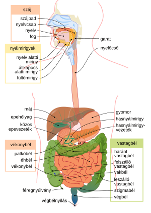
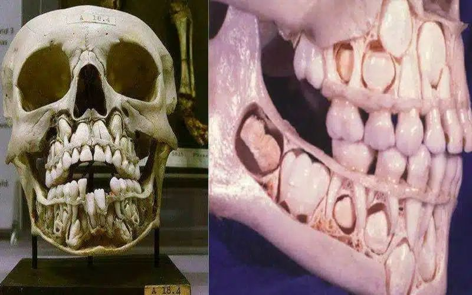
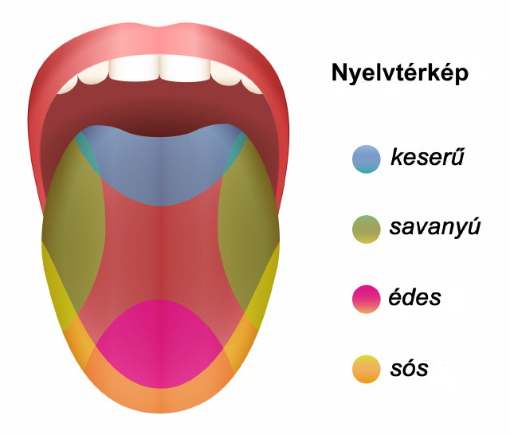

A Tápcsatorna Részei
Az emberi tápcsatorna különböző szervekből áll, amelyek együttműködnek az ételek feldolgozásában és a tápanyagok felszívódásában.
Forrás: Wikipedia - Emésztőrendszer
- Szájüreg: A táplálék felvétele, aprítása, az emésztés megkezdése.
- Garat: A falat továbbítása a nyelőcsőbe.
- Nyelőcső: Az ételt továbbítja a gyomorba.
- Gyomor: Az ételek lebontása savak és enzimek segítségével.
- Vékonybél: A tápanyagok felszívódásának fő helye.
- Vastagbél: A víz és ásványi anyagok visszaszívása.
- Végbél: Az emésztési maradék tárolása és ürítése.
Fogváltás és Tejfogak
Az emberek két fogkészlettel rendelkeznek: tejfogakkal és maradandó fogakkal.
Forrás: Wikipedia - Fogazat
- Tejfogak: Az első fogak, amelyek a csecsemőkorban nőnek ki, segítenek a rágásban és a beszédfejlődésben.
- Fogváltás: Általában 6 éves korban kezdődik, és körülbelül 12 éves korig tart.
A Nyelv és Feladatai
A nyelv az emésztésben, az ízérzékelésben és a beszédben játszik szerepet.
Forrás: Wikipedia - Nyelv
- Nyál: Segíti az étel puhítását és az emésztőenzimek aktiválását.
- Ízérzékelés: Az édes, sós, savanyú és keserű ízek érzékelése.
- Nyelvtérkép: Az ízlelőbimbók eloszlása a nyelv különböző részein, de minden íz minden területen érzékelhető.